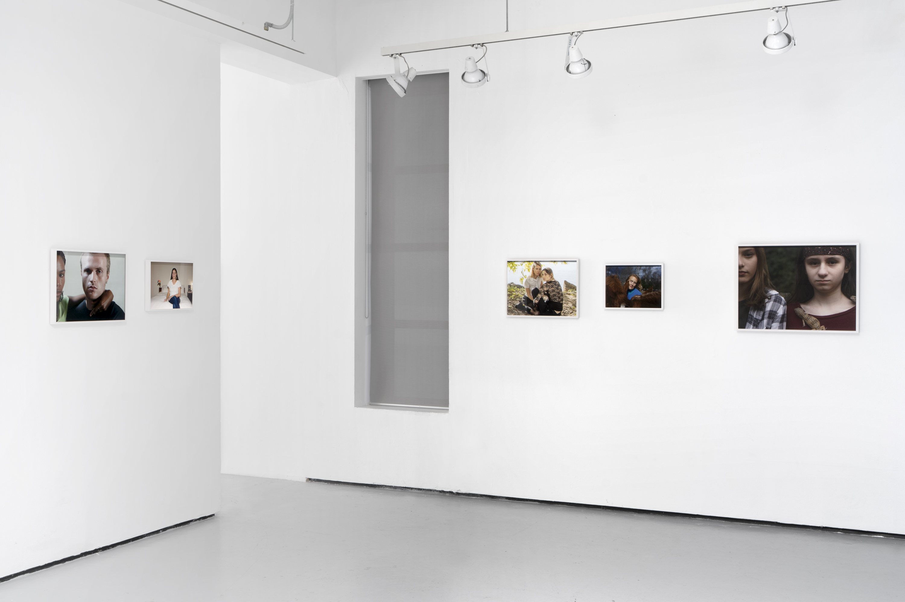
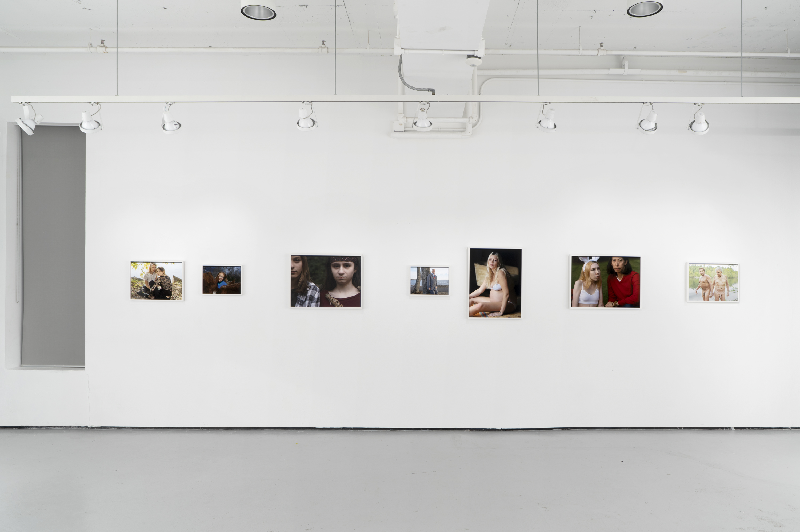
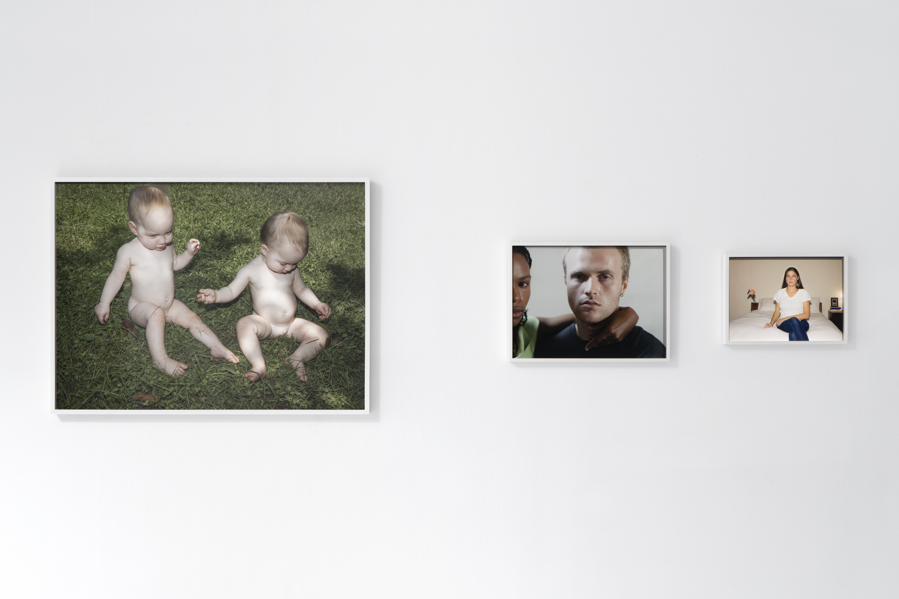
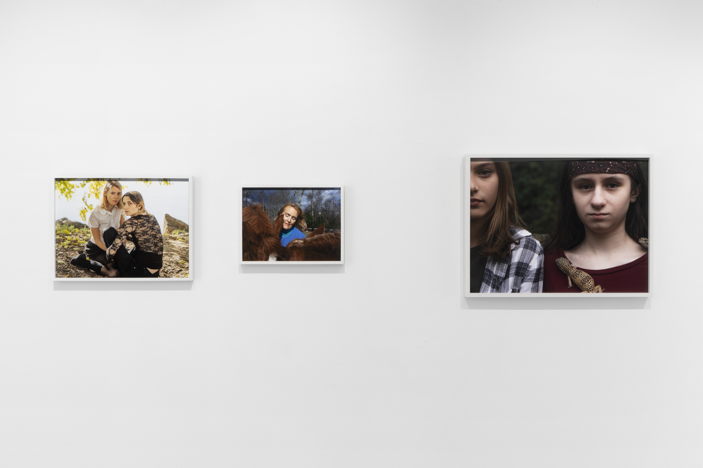
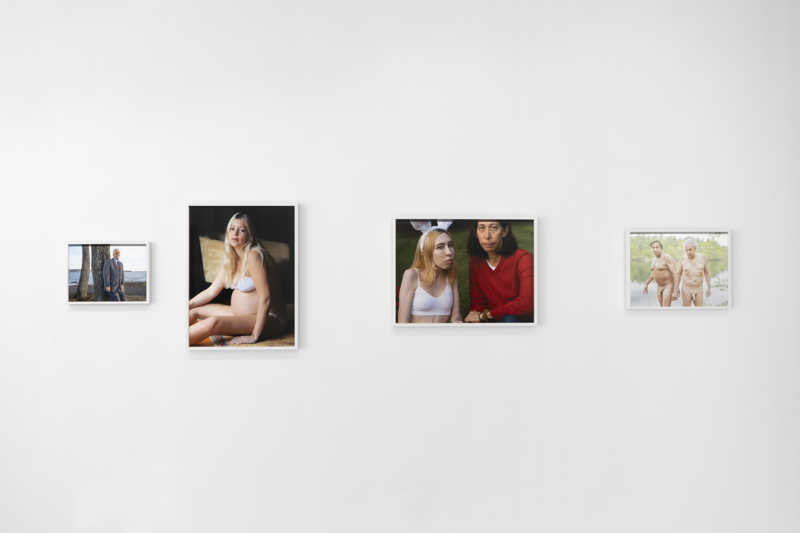

Installation view at Yale School of Art, 2022.
Installation view at Yale School of Art, 2022.
Installation view at Yale School of Art, 2022.
Installation view at Yale School of Art, 2022.
Installation view at Yale School of Art, 2022.
Installation view at Yale School of Art, 2022.
Installation view at Yale School of Art, 2022.
Rosa Polin’s work is committed to capturing the human spirit in all of its terrific, earthly glory. While they frequently reference various aspects of today’s media, each photograph somehow locates a way to resist the pastiche in full. These photographs serve as a necessary foil to the ever growing swarm of internet data that whirrs and whirls according to its own prescribed logic; each of her subjects buzz with a vulnerability so palpable as to almost feel taboo. Exploring that discomfort seems to be essential in viewing these photographs.
That isn’t to say that her work is unconcerned with the apocryphal and other forms of storytelling. Far from it. Whispers of mythology are noticeable throughout, such as the alchemical transformation of a New England equestrian into a Cerberus. The photographic staging registers as so folkloric as to almost bring us back in time cyclically—returning us to a network of myths of which we may or may not be aware.
I’ve been struggling to find a better textual companion to these photographs than the final lines of David Berman’s poem “Governors on Sominex”:
Through the lanes came virgins in tennis shoes, their hair shining like videotape,
singing us into a kind of sleep we hadn’t tried yet.
Each page was a new chance to understand the last.
And somehow the sea was always there to make you feel stupid.
Berman similarly winks at certain mythological archetypes, but Rosa’s work does not lure us off into a novel sleep as much as it awakens and sharpens a quietly subversive way of looking; the innocent are examined through a clinical lense while what could be interpreted as innocence’s unclear antonym (the carnal? desire?) is treated with a vital kindness. I would attest these qualities to the fact that the artist simply gives a damn ... about all people, creatures (yes, even the cold-blooded), forms of light and bodies of water–and her work implores us to do the same. Her subjects demand recognition, and recognize them we will. Each of these photographs offers us “a new chance to understand the last”—a gift that is as humbling as it is thrilling.